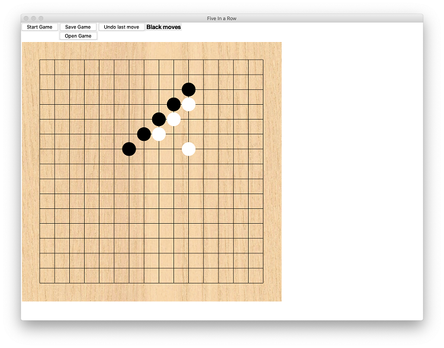
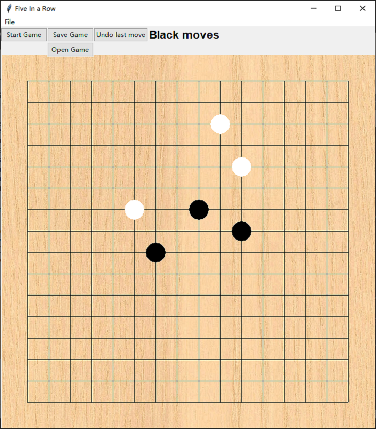
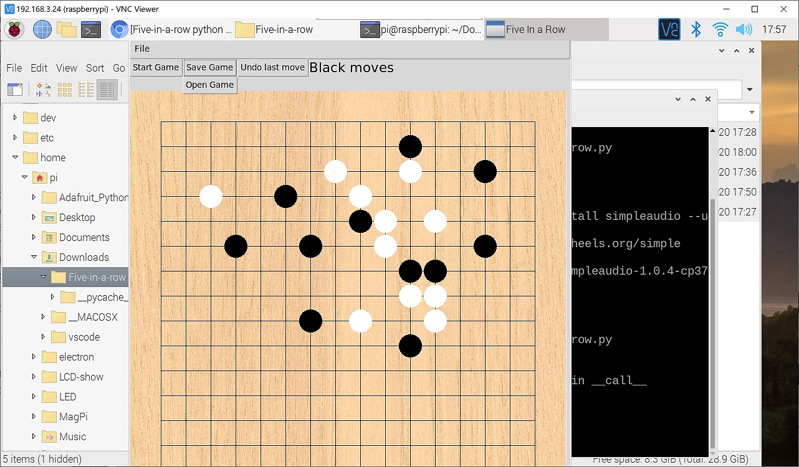

Five-in-a-row python game
This simple game was created for studying purposes and does not have a AI. You can play by yourself or with a friend and see who is better at the Five-in-a-row game. The game works on mac, windows and raspberrypi.
Features
Unfinished games can be saved on a file.
Saved games can be reopened and players can continue to play.
There is a sound played whenever a chess is placed.
Realistic chess board.
There is a status bar which shows whether it's black or white's turn.
Players can reset a game by pressing the “Start Game” button.
Players can undo a move by pressing the “Undo last move” button.
Whoever gets five of the same colored chess in a row will win the game.
How to install/run/play the game:
Make sure your computer has python3 installed. (Download at python.org)
There is one addtional installment necessary for the game to have sound.
Open your computer terminal and run the following command, python3 -m pip install simpleaudio --user.
When finished with the above procedures, type in the command below to run the game, python3 five_in_a_row.py.
Here is a screenshot of the game on a macOS system

Here is a screenshot of the game on a windows system

Here is a screenshot of the game on a raspberrypi system
